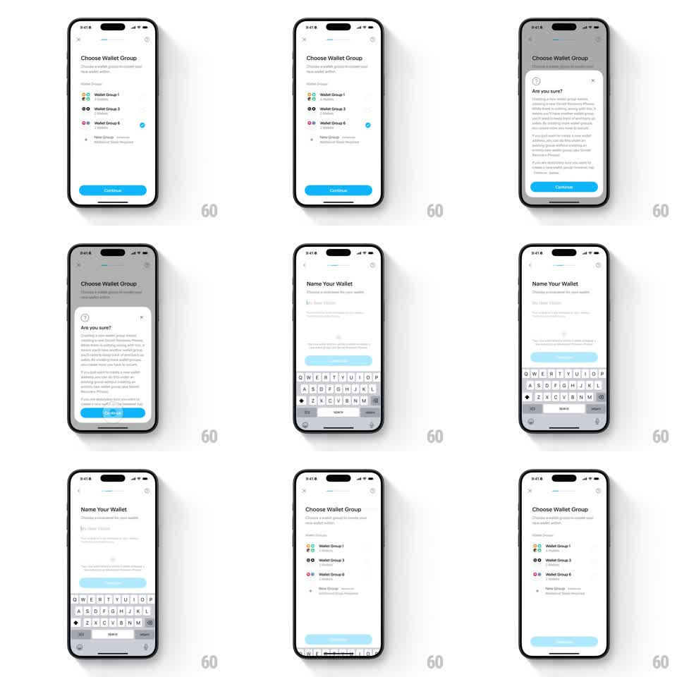

Media
Frame-by-frame

Rebuild this interaction 1:1: Family's wallet-group onboarding transition - on "Choose Wallet Group", Continue raises an "Are you sure?" sheet whose icon and button morph forward into the "Name Your Wallet" screen as the keyboard slides up in coordination, then back out on return.

Rebuild this interaction 1:1: Family's wallet-group onboarding transition - on "Choose Wallet Group", Continue raises an "Are you sure?" sheet whose icon and button morph forward into the "Name Your Wallet" screen as the keyboard slides up in coordination, then back out on return.
## Integration
Integration: stack-agnostic spec - springs given as stiffness/damping, timed motions as duration + curve; map every value to your framework and animation library of choice.
## Scene
Light "Choose Wallet Group" screen: radio rows (Wallet Group 1, Wallet Group 3, Wallet Group 6 with colored avatars), "New Group" row, blue "Continue". The sheet: help-circle icon, "Are you sure?", explainer paragraphs, blue "Continue". Destination: "Name Your Wallet" - "Choose a nickname for your new wallet", text field ("My New Wallet"), blue "Confirm", keyboard raised.
## Motion spec
Pattern: shared icon/button morph with coordinated keyboard.
- Tap Continue: the sheet slides up (spring ~300/20) over the dimmed group screen.
- Tap the sheet's Continue: the help icon flies up and morphs into the destination's header area (arc path, 300ms) while the blue button slides down and forward, becoming the "Confirm" button (label crossfade 150ms, width easing 200ms).
- The "Name Your Wallet" content rises with the keyboard in lockstep (keyboard 250ms, field sliding up with it), the title fading in last.
- Back: the keyboard drops first (200ms), then the reverse morph returns the icon and button to the group screen (300ms).
## Calibration
- Keyboard and content move as one body - no gap opens between field and keys.
- The blue button never changes shape abruptly; width and label animate.
## Reduced motion
Screens crossfade (250ms); keyboard appears without sync animation.
## Don't miss
- The selected group keeps its blue radio dot visible behind the sheet scrim.
- "Confirm" starts disabled-lavender and saturates once the field has text.